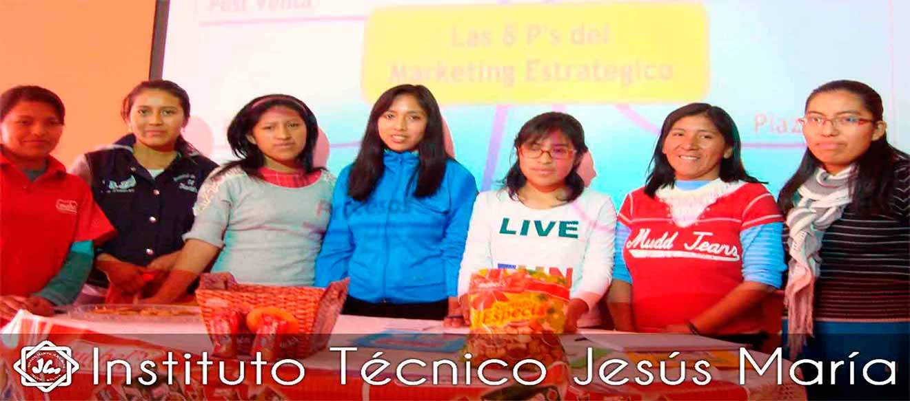
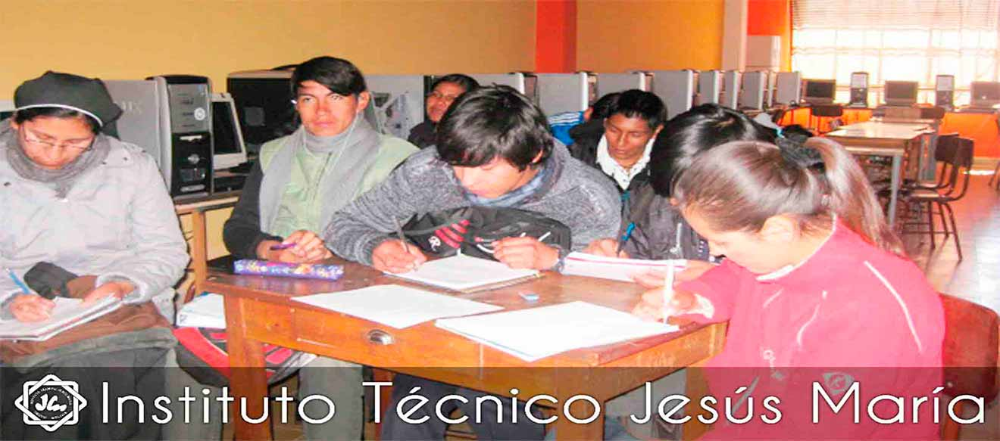

Instituto Tecnico Jesus Maria
"Donde el Talento se Convierte en Logro"






"Donde el Talento se Convierte en Logro"
Nuestros principios y propósito institucional
Formar profesionales técnicos competentes, íntegros y comprometidos con el desarrollo social y tecnológico de la región y del país, brindando una educación de calidad basada en valores y orientada a la excelencia académica.
Ser un instituto técnico líder y referente a nivel nacional, reconocido por la calidad de su formación profesional, la innovación educativa y su aporte al desarrollo sostenible y tecnológico de la sociedad.

Desde el 27 de Enero puedes inscribirte a cualquiera de nuestras carreras técnicas.
El Instituto Tecnico Jesus Maria cumple sus 200 años
Convenio de pasantías profesionales con empresas reconocidas
"El instituto tecnico Jesus Maria me abrio sus puertas dandome un equilibrio entre lo que mas amo y la necesidad de superarme, agradecido con cada docente que me dio motivacion para poder terminar la carrera en la que estoy , tambien agradecido con cada uno de mis compañeros por brindarme no solo su amistad sino momentos inolvidables"

"La formacion que tuve en el Instituto tecnico Jesus Maria sido una de las cosas que me ayudo a crecer como persona , el tiempo que estuve en el instituto aprendi mucho lo que es el valerse por si mismo y el de entrgar todo de mi, porque la carrera y el perstigio que tiene el instituto no tiene comparasion,Y por ello te doy las gracias por permitirme estar aqui"